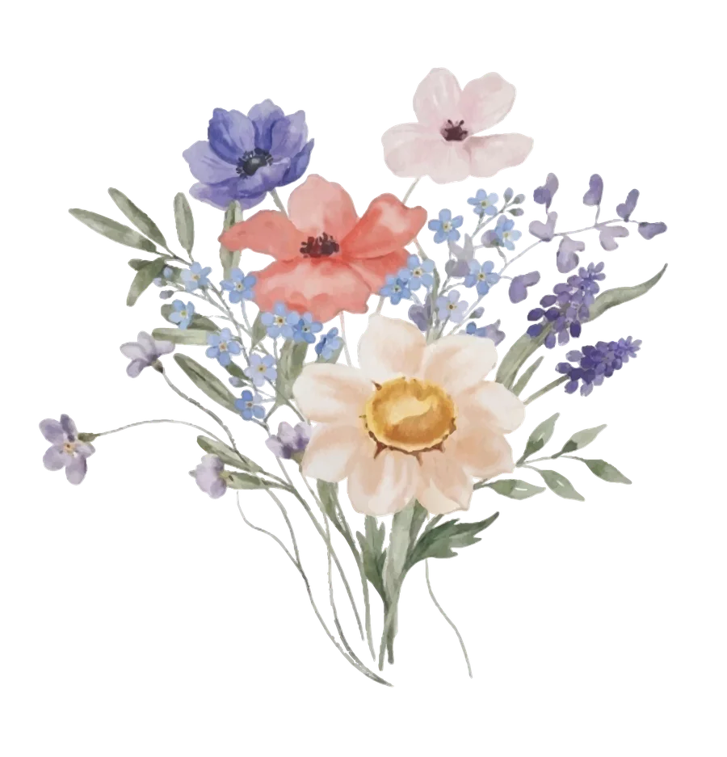
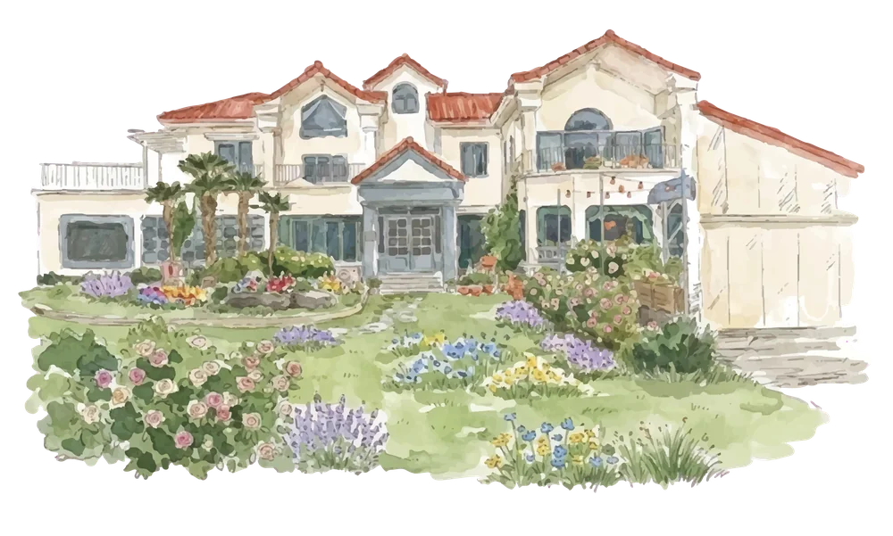
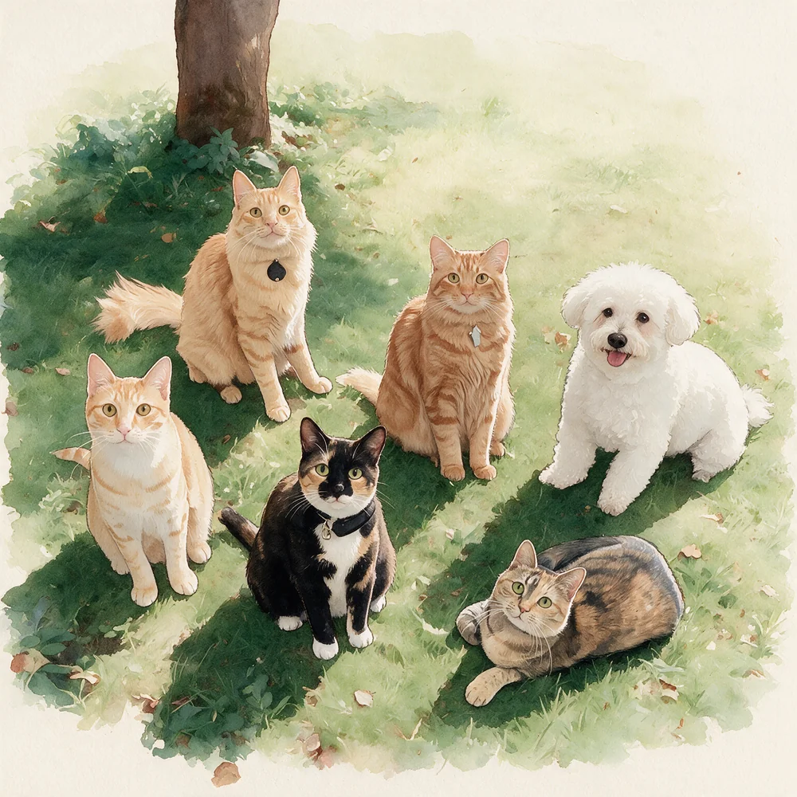

Eden & Luis — Meet Us in Jeju
To our loved ones
planning to travel
across the Pacific and
across the sea
thank you from
the bottom of our hearts
for choosing to make
the journey
for us

We hope our wedding
becomes a beautiful getaway and
a memorable trip for you
Thank you
for always being by our side
with your love
Sincerely, Eden & Luis
- Ceremony
- April 3rd, 2027 at 5 PM
- Lodging
-
April 2nd – 5th
Room number will be
directly notified to you.The Gallery Pension
1717-24 Namjo-ro, Jocheon-eup
Jeju-si, Jeju, South Korea

If you have any questions, please reach out directly to us.
Travel
Flying
There is a few different options for flying to Jeju. Please compare prices & routes for your traveling preferences.
Flight connections from LAX to Jeju
Separate flights, with break Recommended
The most recommended way to fly to Jeju is buying two separate round trip tickets for LAX ↔ Incheon International Airport (ICN), and Gimpo International Airport (GMP) ↔ Jeju International Airport (CJU). This is the most cost-effective way to fly to Jeju.
We recommend spending a few days in mainland before taking another flight. If you’re traveling around Seoul, you can take Airport Railroad (AREX), subway, or taxi to Gimpo airport. If you’re traveling around Busan, you can fly from Gimhae International Airport (PUS).
Additionally, you can fly to any Asian city of your liking and fly to Jeju for the ceremony. Osaka, Tokyo, and Shanghai to name a few.
Straight to Jeju
You can also fly directly to Jeju without taking a break. You can either:
- Buy separate flights like above, but with a small layover in between
- Buy direct flights from Google Flights
However, you are responsible for transferring from INC to GMP even with direct flight tickets. Here is a guide to how to transfer between the airports.
Getting Around
Car rental is essential in Jeju unlike mainland (public transportation is strongly recommended for cities like Seoul and Busan). Public transportation is very limited in Jeju. If you do not wish to rent a car, we suggest taking taxi throughout the island.
Car rental
First, make sure you get an International Driving Permit issued. AAA can issue one for you on the same day you walk in. Then, download the app or go to the website of either option below, and follow the instructions.
Things to Do
Here are rough guides to and places we recommend in Jeju. Jeju is roughly three times larger than Seoul, so there is a lot to see. Each category is hyperlinked to Naver Map with many more location pinned.
Jeju Island has an abundance of diverse and breathtaking sights to see, ranging from volcanic craters and lava tubes to cascading waterfalls and pristine beaches.
Jeju is known for fresh seafood and black pork. (Plus tangerine! So many tangerines.)
There is enormous number of cafes in Korea. Especially in Jeju, many cafes have breathtaking views and architectures.
Helpful Apps
Naver Map or Kakao Map
As noted above, please use these maps instead of Google Maps in Korea.
Kakao T
Kakao T is the most used taxi app in Korea. However, Kakao T might not be able to register your foreign cards. In that case, be prepared to pay in cash or with a physical card after the ride.
Papago
Papago is a translation app that allows taking or uploading pictures, which comes very handy when translating writings on signs or menus.
Baemin or Coupang Eats
These are two top food delivery apps in Korea. Food delivery in Korea is fast, cheap, and available almost anywhere.
If you have any questions, please reach out directly to us.
Questions
Can I bring a plus one?
We are having a very small
wedding, so we kindly note
that the ceremony is for
the named recipient only.
What should I wear?
Our wedding theme is spring garden.
Please feel free to wear attire in the palette of
green, orange, yellow, pink, blue, or purple.
Is there a registry?
Your presence at our
wedding is the greatest gift
we could ask for. We are
planning to have one for
our reception back in LA.
But if you would like to
honor us with a gift at this
time, a monetary
contribution toward our
future together or
honeymoon would be
warmly appreciated.
Is there a reception after the ceremony?
Yes, the reception will start right after dinner
from 8 PM to 12 AM. We will have small bites
and drinks — both alcoholic and nonalcoholic.
Will the wedding be
indoors or outdoors?
The ceremony will be outdoors but will be
moved to indoors for unexpected weather.
The dinner will be indoors, and the reception
will be in the outdoor courtyard by the lodging.

If you have any more questions, please reach out directly to us.
- Eden – 907.223.2125
- Luis – 818.441.2923